今日やることが、LINEに届く。だから、毎日つづく。
中学歴史 全19単元。1日にやるのは、15分の1単元だけ。
保護者の方は料金・解約・AIの安全性のまとめもご覧いただけます。
買ったワーク、
また「最初の3ページ」で止まっていませんか。
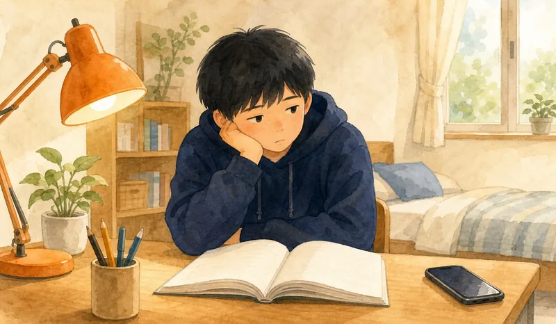
- 最初の3ページで止まる
- あとで丸つけ、が解きっぱなし
- 解説を読まないまま
- 親がつきっきりで大変
- スマホばかり見てしまう
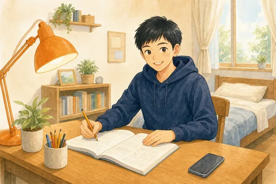
続かないのは、お子さまの意志が弱いからではありません。「つづく仕組み」がなかっただけ。 つづもんは、教材そのものに「つづく仕組み」を組み込んだ学習教材です。いつも手にしているスマホを、勉強の味方に変えます。
三日坊主で終わらせない、4つの仕組み。
やる気に頼らない。やる気がない日でも、ちゃんと回る。つづもんは、そう作りました。
毎日見るLINEに届くから、
忘れず始められる
今日解く1単元が、毎日いつも見ているLINEに届きます。通知からワンタップで解き始められるので、「何をやるか決めて教材を開く」という一番重いハードルがなくなります。
解いた瞬間、
「正解！」が返ってくる
解いたらすぐ、AIがその場で丸つけ。答え合わせを後回しにする間もなく○がもらえます。記述問題もAIがその場で採点！「この答えで合ってる？」がもう起きません。
1単元15分だから、
「今日はここだけ」で終われる
1単元は要点まとめから記述まで見開き完結。部活で疲れた日でも、「1単元だけ」なら机に向かえます。
レベルが上がる。
がんばりが数字で見える
解くたびに正答率・レベル・連続正解が記録されます。昨日の自分より強くなっていくのが、目に見えます。
「つづける」のに、才能はいりません。
仕組みがあれば、勉強はつづきます。
LINEでログインするだけ・お支払いの登録はいりません
何をやるかは、AIが一緒に考えてくれる。
届いた1単元を、すぐ始めるだけ。
中学歴史 全19単元を、教科書の流れに沿って1単元ずつ毎日お届け。教材を探す手間なく、開いたその瞬間から始められます。
「今日の1単元」が決まる
中学歴史 全19単元を、順番に1単元ずつ。何から手をつけるか迷う時間がゼロになります。
その1単元が、毎日届く
その日の1単元が、選んだ時刻に公式LINEへ届きます。平日と土日で別々の時刻を設定できます（例：平日は夕方5時、土日は朝8時）。
開いたら、すぐスタート
目次を探したり開いたりの手間はなし。届いたものをそのまま、スマホで15分。丸つけ・解説もその場で返ります。
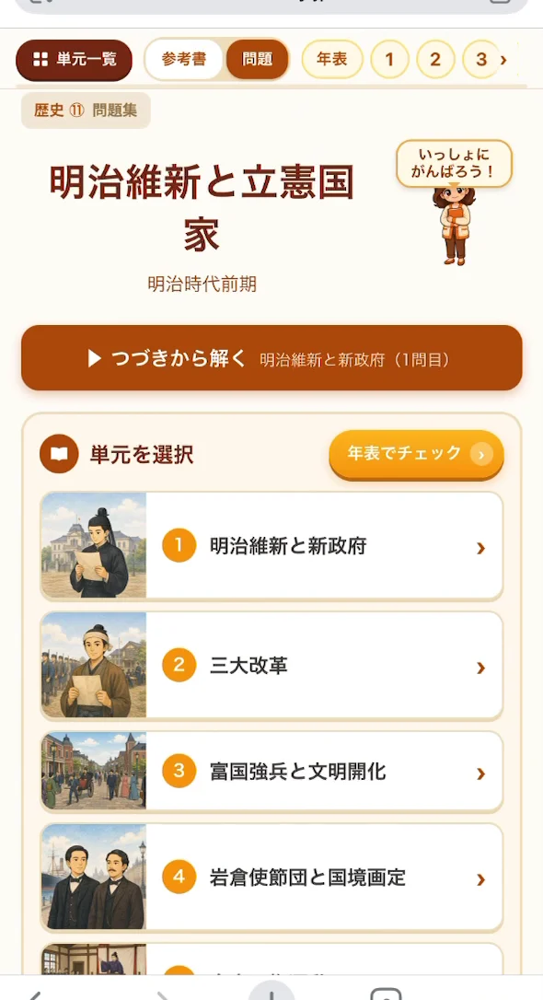
開くと、まず
「つづきから解く」。
前回どこで止まったかを教材が覚えているので、目次を探す必要がありません。ボタンを1つ押せば、続きから再開できます。
※ 実際の画面です。タップ／クリックで拡大できます。
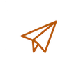
市販ワークの「いいとこ取り」。
1つの単元で要点整理からテスト対策まで。
1単元は、年表 → 要点まとめ → 一問一答 → 実戦問題 → 記述 → 資料の6ステップ。どの単元も同じ流れで進むので、勉強のリズムがつくりやすくなっています。下の6枚は加工なしの実画面です（歴史④「古代の国家」より）。
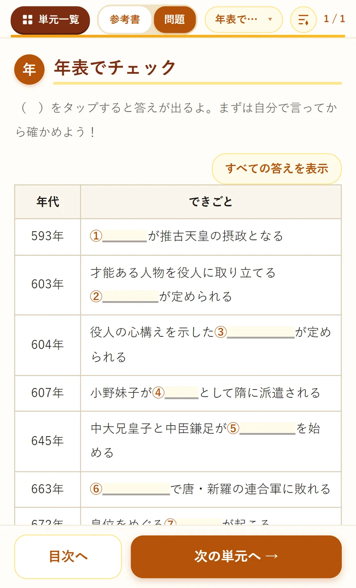
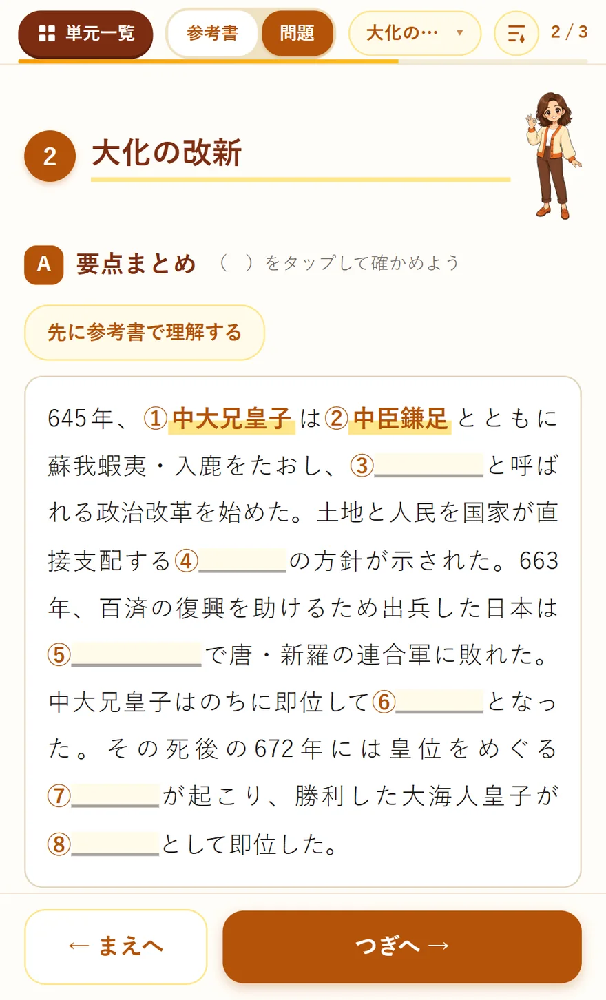
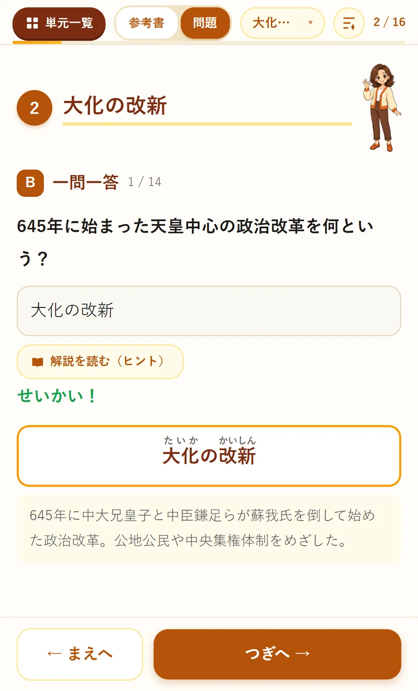
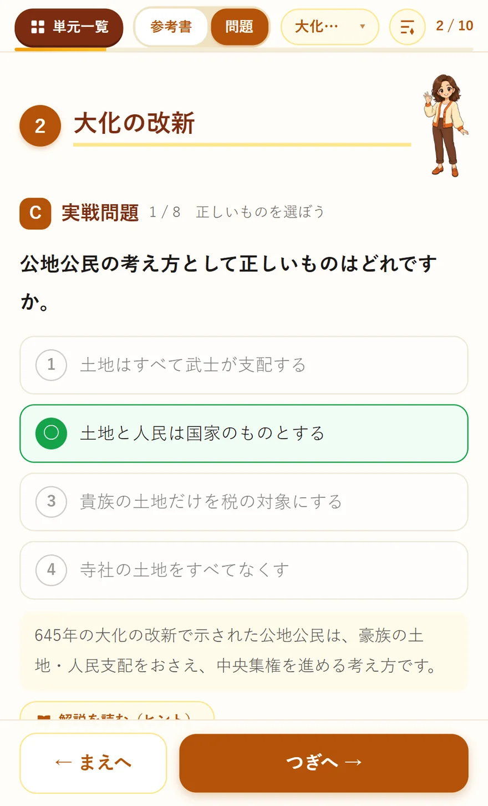
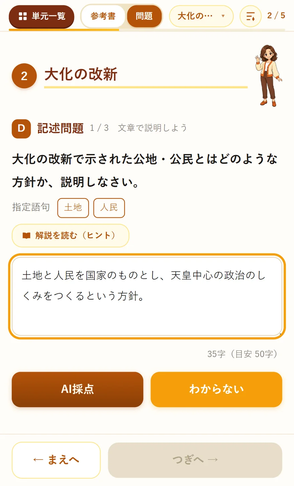
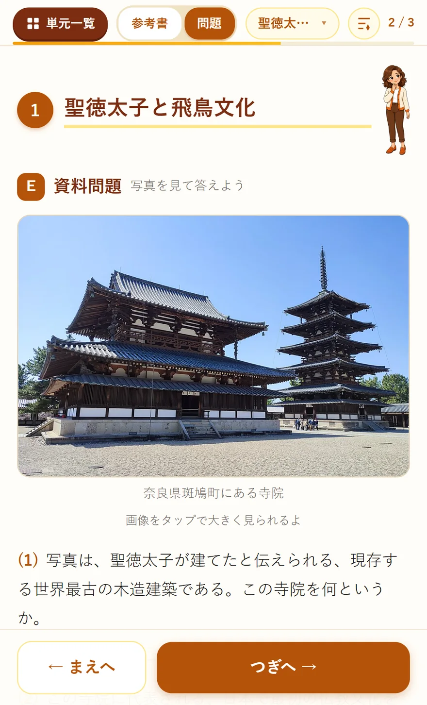
穴埋め年表で、
全体をつかむ
章まるごとの流れを1枚の年表に。空欄をタップすると、その場で答えが出ます。バラバラだった用語が「順番」でつながるので、テスト前の総復習にもそのまま使えます。
穴埋めで、
要点を整理
教科書の要点を短い文章に凝縮。空欄をタップした分だけ答えが開くので、思い出せたところは飛ばし、あやしいところだけ確かめられます。「先に参考書で理解する」ボタンから、いつでも読み物に戻れます。
基礎用語を、
一問一答で
答えを打ち込むと、その場で「せいかい！」。読みがなつきの答えと、なぜそうなるかの解説まで出ます。まちがえた問題は、ニガテとして後日もう一度出ます。
テスト形式の、
4択問題
定期テストと同じ選択形式。まぎらわしい選択肢を混ぜてあるので、なんとなくでは正解できません。押した瞬間に正解が示され、そのまま解説が続きます。
理由・しくみを、
書く練習
「なぜ？」を自分の言葉で説明する記述問題。指定語句と目安の字数が出るので、何を書けばいいか迷いません。書けたら「AI採点」を押すだけで、その場で採点とアドバイスが返ります。
写真・図で解く、
資料問題
入試や実力テストで問われる、資料の読み取り問題。写真は実物の資料をそのまま使っています（タップで拡大）。用語を覚えるだけでは解けない力を鍛えます。順次拡充しています。
※ 上の6枚は加工していない実際の画面です。スマホ・タブレット・PCでそのまま開いて使えます。
丸つけ・解説・ニガテ管理は、AIにおまかせ。
「丸つけしない」「解説を読まない」——紙の問題集の弱点を、公式LINEが引き受けます。追加料金はかかりません。
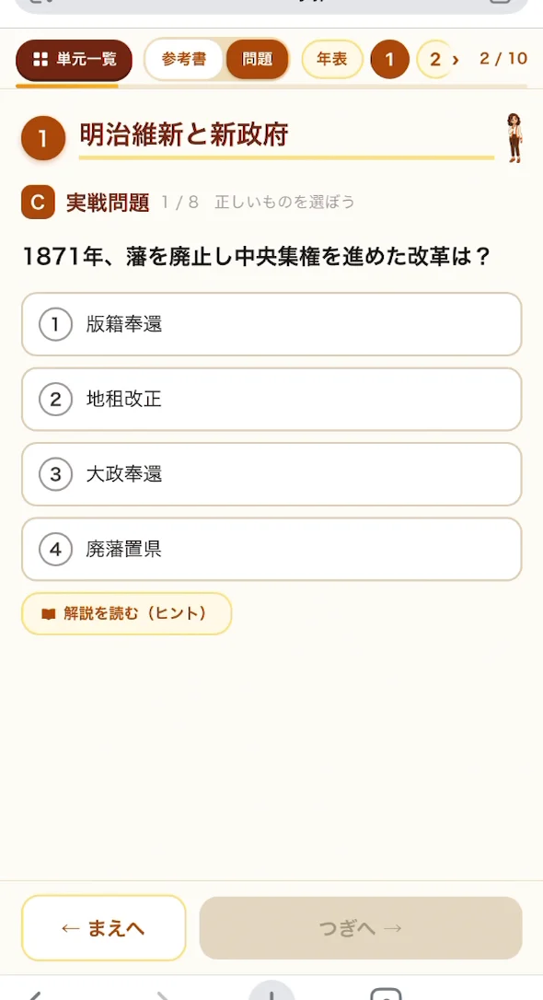
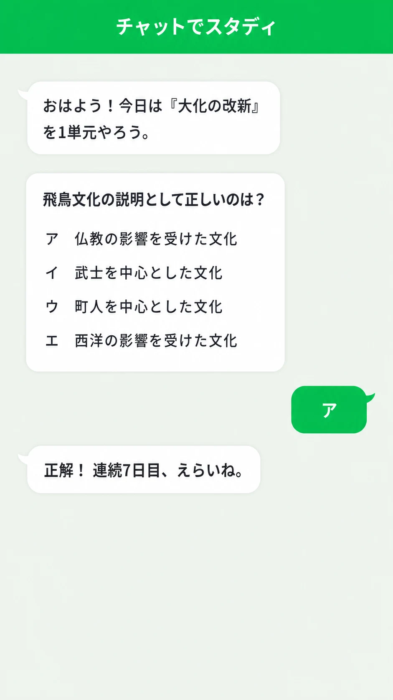
どちらで解いても、記録はAIがまとめて把握します。
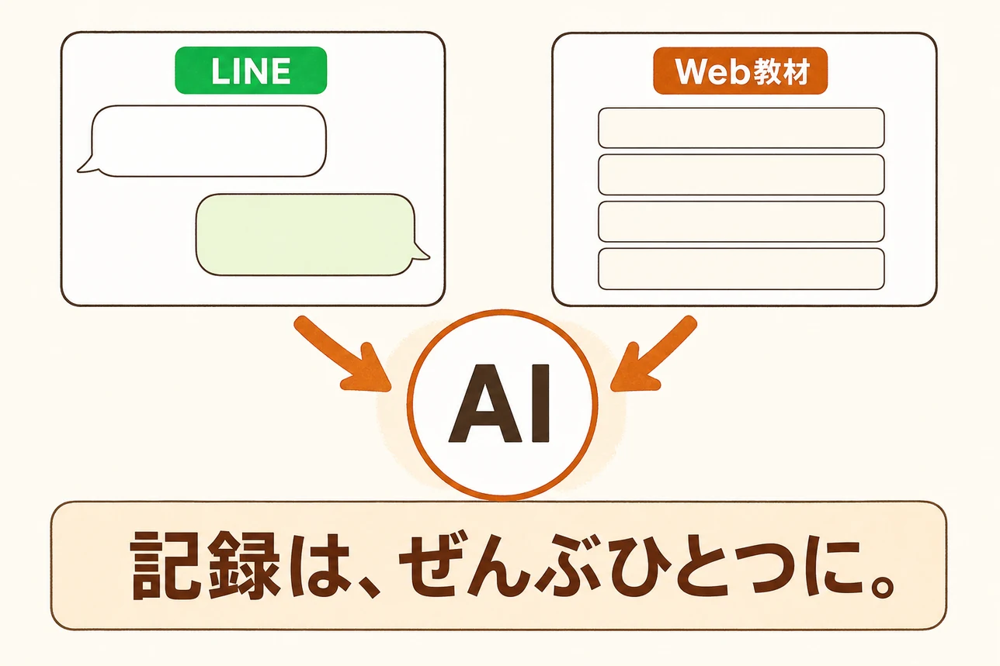
その場で採点・その場で解説
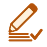
記述問題もAIが採点
まちがいはニガテとして再出題
採点だけじゃない。質問し放題のAI先生がついてきます。
- 24時間、いつでも質問できる
「これも正解かなぁ…？」と迷ったら、トークで聞くだけ。夜の勉強中でもすぐ答えが返ります。
- 何度聞いても、嫌な顔をしない
先生や親には聞きづらい「いまさらの質問」も、AIになら気をつかわずに聞けます。
- 深掘り質問で理解が固まる
解けたあとに「では、なぜ？」と一歩深い問いかけ。テストの記述問題に効きます。
- 「もっと解きたい」に応える
- ニガテをAIが自動で診断
- 解説を読んでも分からないところを、聞き直せる
※ AIとのやり取りは担当者も定期的に確認しています。安心してお使いください。
解いたぶんだけ、記録が積み上がる。
いつ・どの単元を・どれだけ正解したか。つづもんは解くたびに記録し、AIがそれを見て、今日の一手を届けたり、がんばりを言葉にしたりします。
「今日は何をやればいいか」を考える負担はゼロ。全19単元を順番に1単元ずつ、毎日きまった時刻にLINEへお届けします。
解くたびに記録が更新されます。昨日の自分より強くなっていくのが数字で見えるので、続ける理由が自分の中に生まれます。
その場でもう一度、さらに忘れたころにもう一度。ニガテを放置したまま先に進まないようにしています。
続けた日数もAIは見ています。少し間があいても責めるような通知はせず、また今日から始めやすいように声をかけます。
つづもんは開発中のサービスです。「いま使える機能」と「これからの機能」を、はっきり分けてお伝えします。すでに一部が動いているものは、どこまでが実装ずみかも書いています。下の画面は、実装後の完成イメージです。
- 時間×量の見える化と負荷調整：解いた問題数と使った時間を記録し、まとまった時間が取れない日は「今日は5分だけ」に下げて提案します。
- 状況で変わるAIの声かけ：がんばった日は具体的にほめて、間隔があいた日はやさしく。記録に合わせてメッセージが変わります。
- テスト日までの割り付け：テストの日と範囲を伝えると、範囲を先に出すところまでは実装ずみです。今後は残り日数に合わせて、どの単元をいつやるかまで割り付けます。
- まちがえた「問題」ごとの復習：まちがえたままの問題が残る単元を3日後・1週間後・2週間後にはさむところまでは実装ずみです。今後は問題1問ずつに間隔を持たせ、その問題だけを出し直します。
- 保護者へ週1のがんばり通知：お子さまのがんばりを週1回まとめてお知らせし、「ほめる材料」をお届けします。
- 保護者向けAI診断レポート：どこでつまずいているかをAIがまとめ、保護者の方にわかる言葉でお伝えします。
※ 記録して、今日の一手をお届けする——という仕組みです。成績の向上を約束するものではありません。
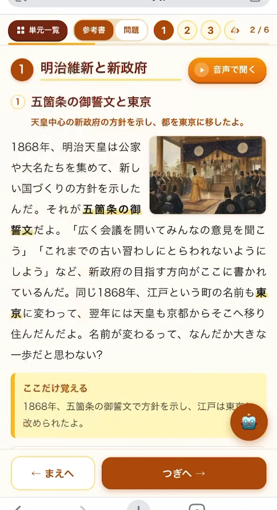
「読める」参考書つき。
歴史ぎらいでも、まず読み物として楽しめる。
問題を解く前に読む、全19単元分の参考書もWeb教材でセット。教科書が苦手な子のために、文字を詰め込まず「語りかける」読みものにしました。
- 会話するように語りかける本文
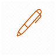
大事な言葉はオレンジで強調- 30秒でふりかえるまとめ
- 全ページ、音声で読み上げ
読むより聞くほうが頭に入る子もいます。参考書は全92節すべてに読み上げ音声を用意しました。再生すると、いま読んでいるところが文中で光ります。移動中や、机に向かう気力がない日にも進められます。
※ 左は実際の参考書ページです。タップ／クリックで拡大できます。
「ちゃんとやってる？」と聞かなくても、がんばりが見える。
丸つけ・解説・記録をAIが引き受けるので、保護者の方が横について教える必要はありません。それでも、お子さまの学習のようすはきちんと残ります。
学習記録が残る
いつ・どの単元を・どれだけ正解したかが記録され、「がんばってるね」と声をかけるきっかけになります。
LINEでもWebでも、記録は1つに
お子さまがLINEで解いても、Web教材のページで解いても、AIが記録をひとつにまとめます。使う場所を選びません。
会員限定のオリジナル問題
問題はすべて、本教材のために書き下ろしたオリジナル。会員だけが使えるWeb教材としてお届けします。
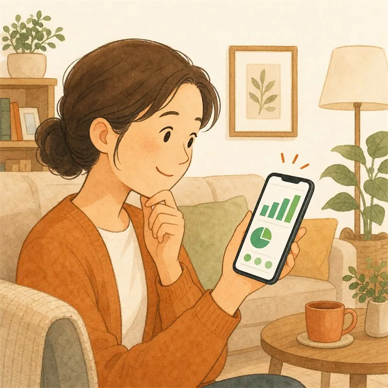
つづくから、
教材代がむだになりません。
どんな教材も、続いてこそ力になります。つづもんは月額ひとつのプランで、「つづく仕組み」ごとお届けします。
※ 市販の問題集・通信教育の金額は一般的な相場の目安です。教材の内容や対象範囲は各社で異なるため、価格だけの単純な比較ではない点はご了承ください。
- 中学歴史 全19単元（中1〜中3の全範囲）をスマホで（問題集＋参考書）Web教材
- 公式LINEでの問題演習・AI採点・学習記録使い放題
- 質問し放題のAI先生使い放題
価格は税込。いつでも解約OK、違約金などはありません。きょうだいでお使いの場合、2人目以降は月額980円（税込）になります（学習記録が別々になるため、お一人ずつのアカウント・ご契約です）。スマホだけで完結します。
いまなら8月15日まで無料でおためしいただけます（8月11日までに始めた方）。合うと分かってからの登録で大丈夫です。
登録後はスマホですぐに全単元が使い始められます。
お申し込みの前に利用規約・特定商取引法に基づく表記・プライバシーポリシーをご確認ください。お申し込みをもってこれらに同意いただいたものとみなします。解約はアカウント・お支払い管理からいつでも行えます。
はじめ方は、かんたん3ステップ。
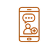
「3日間無料でためす」
を押す
公式LINEでログイン
（同時に友だち追加になります）
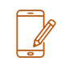
その場で全19単元が
ひらく
つづもんを作った人
ご購入前の疑問にお答えします
飽きっぽいうちの子でも、本当に続きますか？
LINEでもWebページでも解けますか？記録はどうなりますか？
「今日の1単元」はどうやって決まりますか？
LINEを使っていなくても利用できますか？
支払い方法は何が使えますか？
無料体験が終わると、自動で課金されますか？
どの教科書を使っていても大丈夫ですか？
対象学年を教えてください。
月額料金はいくらですか？
解約したら、教材は使えなくなりますか？
きょうだいで一緒に使えますか？
登録後、教材はどうやって使い始められますか？
「つづくかどうか」は、
無料でたしかめられます。
ボタンから公式LINEでログインすると、その場で全19単元がひらきます。解き終わったお子さまが「もう1問」と言うかどうか——まずはそれだけ、見てみてください。
3日間無料でためす登録1分・購入は納得してからで大丈夫です
公式LINE ID：@215uijik